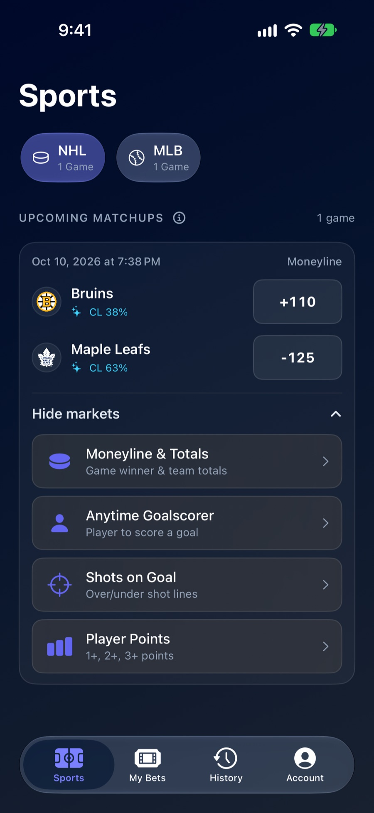
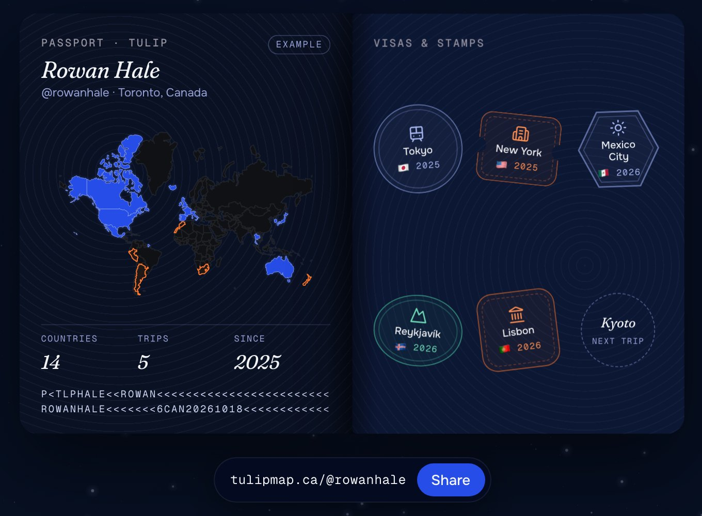
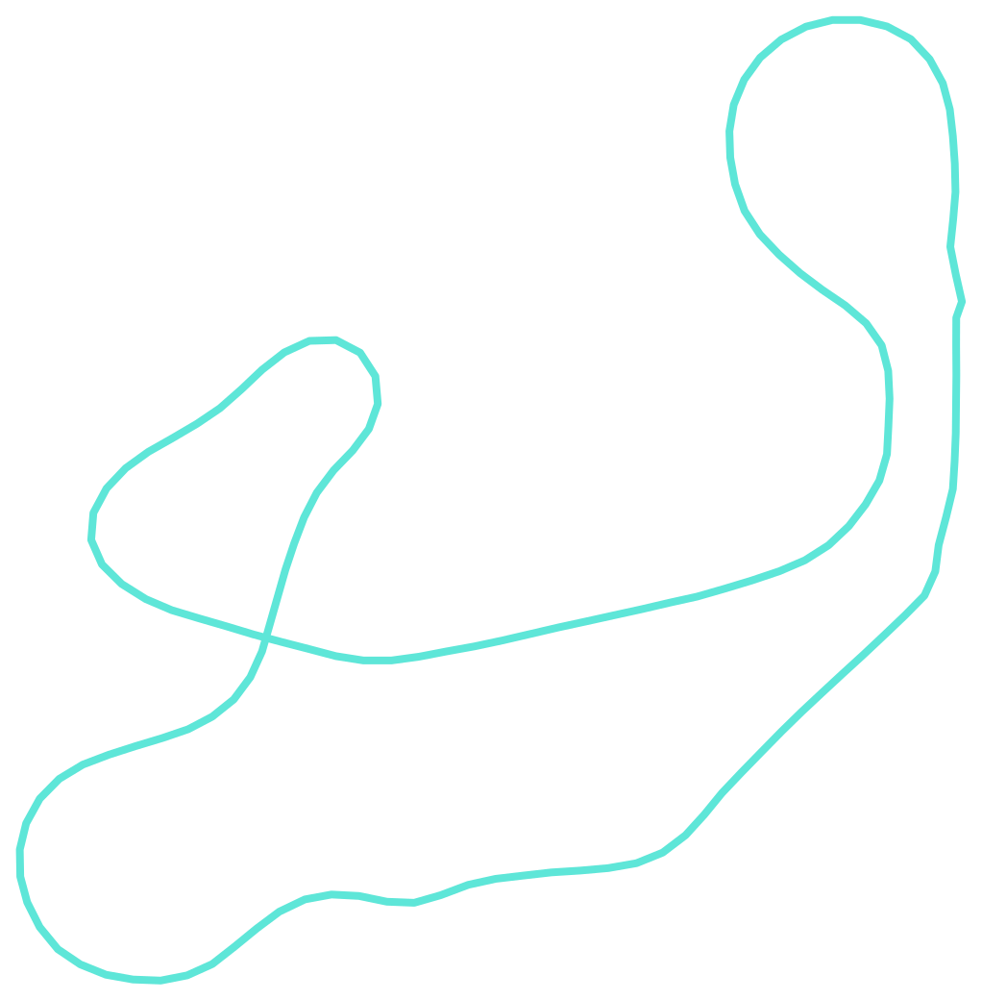

Projects
Everything I've built, biggest first.
-

01 / 04January 2025 to nowClosingLine
Live on iOS and web · Public beta
Sports picks, backed by a model.
Pick NHL and MLB games, build parlays with free virtual Points, and see how a prediction model rates every pick before you make it. Your bets update live as the games play out.
Co-founded with Dylan Plut and Brenden Auger. I built the iPhone app, the website and the server they both run on.
+1,587 Points What the model earned betting 100 Points on its top pick every night of the 2024 NHL season.
- SwiftUI
- Next.js
- React
- Tailwind
- Python
- Flask
- Postgres
- Redis
- Docker
- Google Cloud
- Stripe
- Gemini
-

02 / 04May 2026 to nowTulip
Invite-only beta
Your travel, on Earth.
A 3D globe for everywhere you've been and everywhere you want to go. Pin places, plan trips with friends, and forward a booking email to drop it into the right trip.
Co-founded with Brenden Auger. I built the website, the iPhone app and the server behind them.
900+ commits since May 2026
- Next.js
- React
- TypeScript
- Mapbox
- Python
- FastAPI
- Postgres
- Supabase
- SwiftUI
-
 03 / 04
03 / 04Circuit Board
Hardware · School project
From breadboard to printed circuit board.
I took a blinking half adder off a breadboard and turned it into a real two-layer circuit board, designed in EasyEDA and made by JLCPCB.
Paid for by Hack Club's OnBoard grant.
- EasyEDA
- JLCPCB
-

04 / 04February 2026Forza Telemetry
Open source
Lap analysis for Forza Motorsport.
Forza streams live data from your car while you drive. This tool reads it, draws every lap on the track and shows where you gained or lost time against your best.
A small Node server listens for the game's telemetry packets and rebroadcasts every field over a WebSocket. The Next.js dashboard draws each lap on the track, splits it into mini-sectors and lays laps side by side, so you can see exactly which corners cost you time. Laps can be saved and grouped by driver for local co-op.
1:24.506 My best lap on Maple Valley, in a Hyundai Elantra N
- Node.js
- WebSockets
- Next.js
- React
- Tailwind